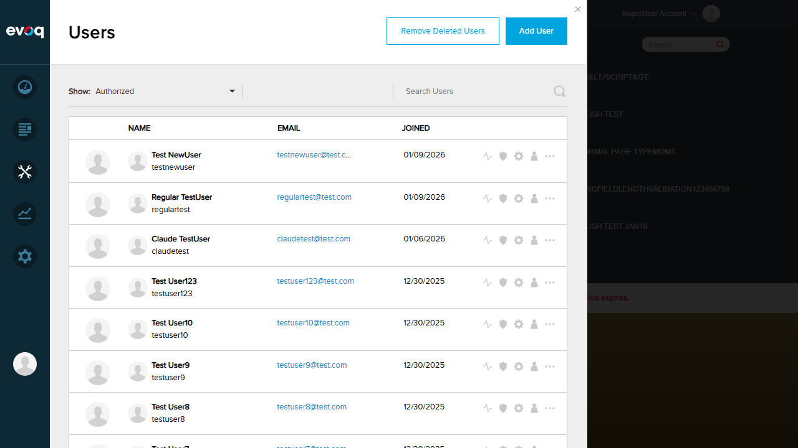

Test Report: Pagination Controls
Feature Information
| Extension |
Evoq.PersonaBar.CommunityAnalytics |
| Feature Name |
Pagination Controls |
| Description |
Navigation controls for paginated data in tag statistics and popular content |
| Feature Priority |
Medium |
| UI Location |
PersonaBar > Dashboard > Community Analytics > Paginated Sections |
| Test Date |
2026-01-06 |
| Test Environment |
http://localhost:8081 |
Critical Issue Found
JavaScript Error Prevents Module Loading
The Community Analytics module fails to initialize due to a JavaScript error. This prevents the entire dashboard from rendering, making pagination control testing impossible.
TypeError: utility.serializeCustomDate is not a function
at dashboardClass.init (social-dashboard-combined-instance.js:1025:39)
at Object.init (social-dashboard-combined.js:16:23)
at extension.js:104:32
Root Cause: The utility.serializeCustomDate function is being called but is not defined in the utility object passed to the dashboard initialization.
Test Cases
Test 1: Navigate to Next/Previous Page
FAIL
What was tested
Ability to use prev/next pagination arrows in tag statistics and popular content sections.
Steps Taken
- Logged in as SuperUser (host)
- Navigated to PersonaBar > Dashboard > Community Analytics
- Attempted to view pagination controls in the dashboard
Result
The Community Analytics panel failed to load due to JavaScript error. The dashboard shows a blank white panel instead of the analytics interface with pagination controls.
Screenshot Evidence

Test 2: Verify Pager Visibility and Disabled States
FAIL
What was tested
Verification that pager controls become visible when data spans multiple pages, and that prev button is disabled on first page.
Steps Taken
- Navigated to Community Analytics section
- Attempted to locate pagination controls
Result
Unable to verify pager visibility because the Community Analytics module failed to render. No UI elements are displayed due to the JavaScript initialization error.
Code Analysis
Based on code review, the pagination should show:
- Prev/Next arrow buttons in the table header
- pagerPrevClass/pagerNextClass for disabled state styling
- Page size of 5 items for Popular Content, 6 items for Tag Stats
Test 3: Validate Current Page Indicator
FAIL
What was tested
Validation that the current page is indicated by disabled prev button on first page and disabled next button on last page.
Steps Taken
- Attempted to access Community Analytics dashboard
- Dashboard failed to load
Result
Cannot validate page indicators because the entire module failed to initialize. The JavaScript error prevents any dashboard content from being rendered.
Setup Screenshots
Login Confirmation (Setup)
Successfully logged in as SuperUser Account

Navigation to Community Analytics
PersonaBar Dashboard menu expanded showing Community Analytics option

Observations
- Critical Bug Found: The Community Analytics module has a JavaScript error that prevents initialization. The error
TypeError: utility.serializeCustomDate is not a function occurs during dashboard initialization.
- Code Review Findings: Based on code analysis of
pageActivities.js and CommunityAnalyticsController.cs:
- Pagination uses simple prev/next arrows (no page numbers or jump-to-specific-page)
- Page sizes are hardcoded: 5 items for Popular Content, 6 items for Tag Stats
- Backend API supports pageIndex and pageSize parameters
- No "Jump to specific page" feature exists in the UI (only prev/next navigation)
- No user-configurable page size options exist
- Impact: All Community Analytics functionality is unavailable due to this JavaScript error, not just pagination controls.
- Recommended Action: Fix the
utility.serializeCustomDate function in the utility module or ensure it is properly passed to the dashboard initialization.